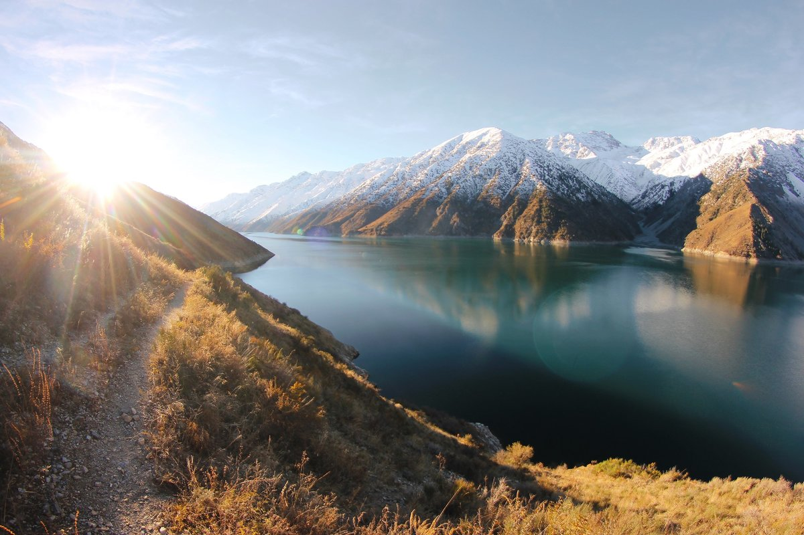
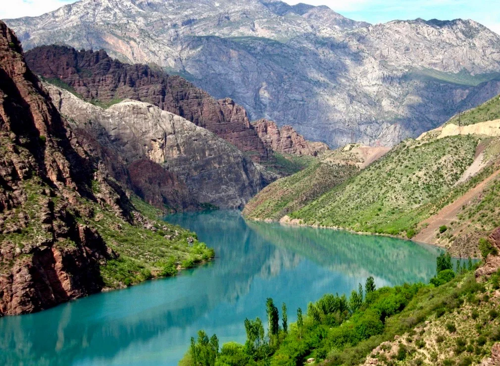

Первую страну которую я решил посетить это Италия.
Съездил я как-то раз попутешествовать в солнечную Италию, и по итогам своей поездки, в приватной беседе кратенько описал свои впечатления от городов, в которых довелось побывать. Хотел бы поделиться ими с вами, быть может кто-нибудь захочет посетить эти завораживающие места.
Приземлились мы в Римини. Это один из крупнейших итальянских курортов, расположенных на берегу Адриатического моря. Сентябрь месяц подходил к концу, погода стояла дивная.

Вторая страна которую я посетьил это Киргизии.
Киргизия расположена в пределах горных систем Тянь-Шаня (высшая точка — пик Победы, 7439 м) и Памиро–Алая. Более 90% территории лежит на высотах свыше 1500 м над уровнем моря. Горные вершины часто покрыты ледниками, крупнейшие из которых — Южный и Северный Иныльчек, Каинды. Горные хребты разделены долинами и котловинами

Уникальная природа страны обусловлена необычным внутриматериковым расположением, своей отдаленностью от океанов и морей, высоким расположением над уровнем моря и рельефностью. Именно эти аспекты наградили страну многообразием природных комплексов. Территория Кыргызской земли имеет в своих владениях и пустыни, и лиственные леса, и болота, и степи, и даже ледниковые места, в которых температура может опуститься до минус 40 градусов.
